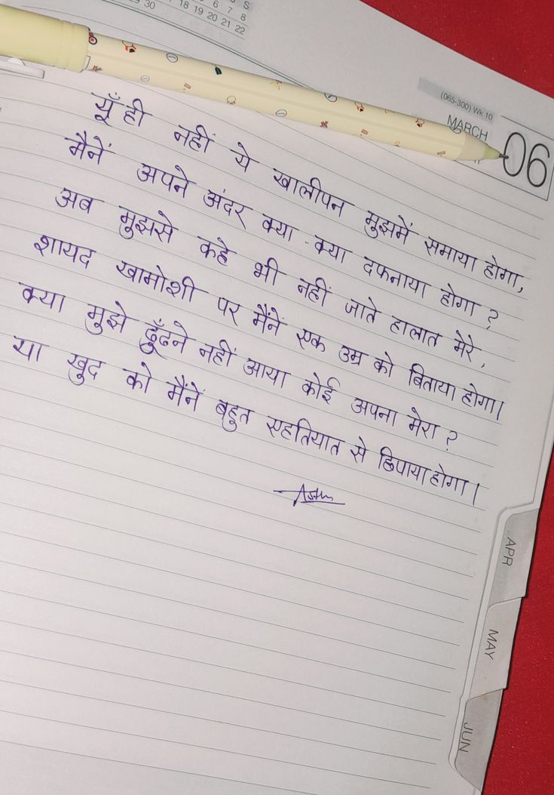

File: hin_sample_10.jpg

| op. . = 3 = = : “a 2 oe Ri 5 जज जज ST | co Fay Thon RE Mac : 7 के ee 4 Ur ss a re ota ae = Yeh जे Rap, : oy ey Acc a ae — i —— Ss = soe a || sil SS
ee SS : See Bee RR ae we UR 9 काश SS ees ™ - — = ~ el . ft — जि = mel ans Soe ge जात डा Ste SSS VO, Su h) ry eee ‘ = a NOR ; =o me oe | : — — Se OO tog re न पक CR OSE te
(05 MARCH मैने अपने ालीपन ख अदर अब मूझसे मुझमे शायद क्या खामोशी होगा , दफनाया होगा क्या जाते ढूँढने हालात गही खुद को मैंने आया बिताया कोई होगा | अपना र्हतियात मेरा २ ढिपाया होगा
❌ OCR Failed
ख़ातू
भूद् नै नि अब अपने शरू ऱरफफ डुबसे क्य डेबिसें शायद फ्या फहे भी केय फिफय भकशी शी रुच के परसें मैने जते वे या इविन जटी पर उित् भै वैलत बेदे आया कोई किय वय बुल सलिल अपना के र से पिज अैलन
मनँ मैनें ऋूँी महीीं व्ररज़ २३र मथ अब जपने अंदर ग्रे ख्वालीपन शायद मुझे कहे कया कय मुझमें जमाय कया मुझे ख़ामोशी पर मैने भी नहीं जाते दफ़नाप होग होग य छुद क ढ़ूँबने नहीं जाय कक ज् क हालाल मेरें मेरे मेे मैने बहुत रणहतियाल कोई अपना मेरा मे बिताया होगा गि गे छिणाय होएए। ४ूँ ह